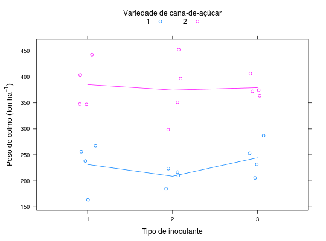

Experimento fatorial que avaliou o peso do colmo de duas variedades de cana-de-açúcar em resposta a três inoculantes aplicados.
Um data.frame com 24 observações e 4 variáveis, em que
variedinocublocopesoCosta (2013), Tabela 7, pág. 68.
library(lattice) data(CostaTb7)#> Warning: data set ‘CostaTb7’ not foundstr(CostaTb7)#> 'data.frame': 24 obs. of 4 variables: #> $ varied: Factor w/ 2 levels "1","2": 1 1 1 2 2 2 1 1 1 2 ... #> $ inocu : Factor w/ 3 levels "1","2","3": 1 2 3 1 2 3 1 2 3 1 ... #> $ bloco : Factor w/ 4 levels "1","2","3","4": 1 1 1 1 1 1 2 2 2 2 ... #> $ peso : num 238 224 287 348 351 ...ftable(with(CostaTb7, tapply(peso, list(varied = varied, inocu = inocu, bloco = bloco), FUN = mean)))#> bloco 1 2 3 4 #> varied inocu #> 1 1 238.1 256.0 267.7 163.6 #> 2 223.6 217.0 184.7 210.5 #> 3 286.8 205.8 231.6 252.9 #> 2 1 347.5 403.9 347.0 442.6 #> 2 351.2 452.5 396.9 298.4 #> 3 372.3 406.5 374.5 363.8xyplot(peso ~ inocu, groups = varied, data = CostaTb7, as.table = TRUE, layout = c(NA, 1), jitter.x = TRUE, type = c("p", "a"), auto.key = list(title = "Variedade de cana-de-açúcar", cex.title = 1, columns = 2), xlab = "Tipo de inoculante", ylab = expression("Peso de colmo"~(ton~ha^{-1})))